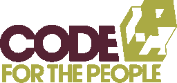
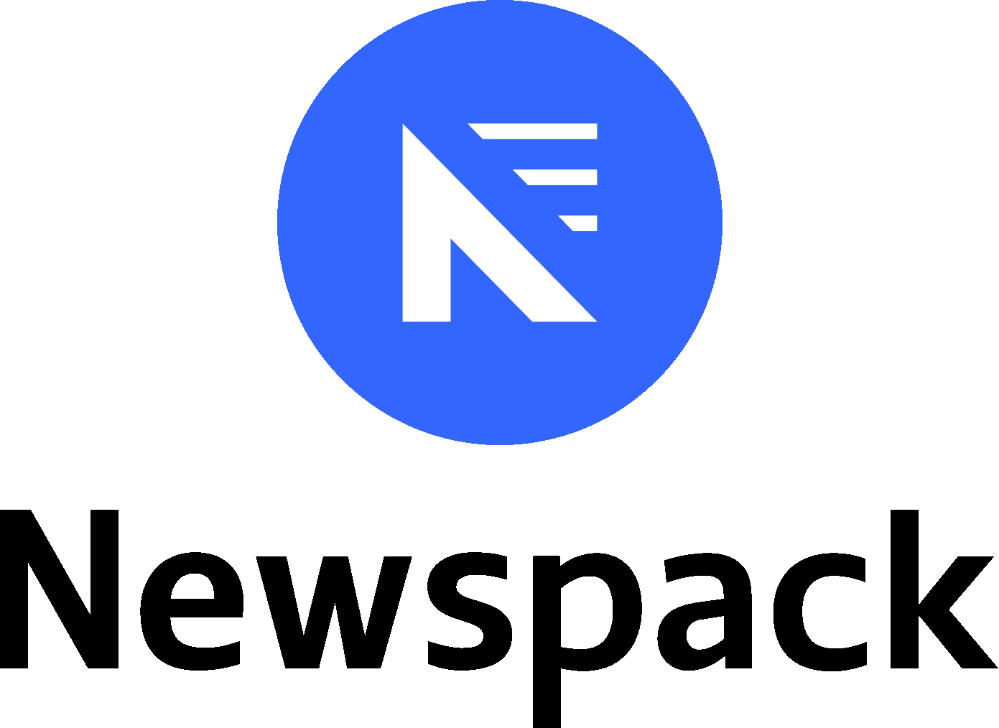

My Experience
WordPress

My WordPress journey began way back in the early days of the platform, around 2007, when I began experimenting with WordPress as a solution for the internet marketing agency I co-founded in 2004. WordPress quickly became a frequently used tool both internally and for clients.
I subsequently started a freelance business where I specialised in WordPress development projects for clients of various sizes, including some with a high-profile. Eventually that work earned me a job offer as the 6th member of well-respected agency Code For The People, a step that had me working on sites for the Rolling Stones, Stephen Fry and Riverdance among others.
WordPress.com VIP
The acquisition of Code For The People by Automattic and our absorbtion into the VIP team saw a new phase in my career. At VIP I helped support some of the world's biggest brands including news publishers like News Corp, News UK, Time Inc, CBS and PMC. My expertise as both a WordPress engineer and an excellent communicator saw me move to an engineering lead position where I became a named contact for some of VIP's most important clients.
In this position I handled outages, forward planning and high-profile migrations working with and connecting both internal and external teams alongside my account management colleagues. VIP was often a high-stress, high-pressure environment but one in which I grew and excelled.
Newspack
In 2019, as a founding member of a new team, I helped build a brand new product aimed at small- to medium-sized news publishers. My experience with news publishing clients and as a senior engineer was incredibly valuable to the project. My skills then saw me create and take on the Technical Account Manager role where I worked directly with clients to onbaord them and migrate their sites to Newspack. I further helped hire two more people into the newly created role as Newspack expanded rapidly.
Lichfield Live
My passion for journalism started in my home city of Lichfield when in 2009 I volunteered to help with the technical side of a new, so-called at the time, "hyperlocal". Still going strong it is now a not-for-profit business with a local board of directors, around 90,000 visitors every month and the sole news publsher for the area.
It is not just my technical skills that I have volunteered to Lichfield Live but my enthusiasm for social entrepreneurship and business acumen, leading it to it's current status and helping grow it's audience as well as substantially increasing revenue.
Values
I have a strong sense of social justice and that filters into every aspect of my life, including work. When I take on work I'm not just looking at the revenue and how interesting the project might be, I'm also looking to make sure it doesn't conflict with my values.
To that end, please be aware that I will not entertain projects for clients involved in or supporting:
- Fossil fuels
- Suppression of human rights
- Cryptocurrency and/or NFTs
This list is subject to change at any time and the choice of whether to reject an opportunity based on values is entirely mine.